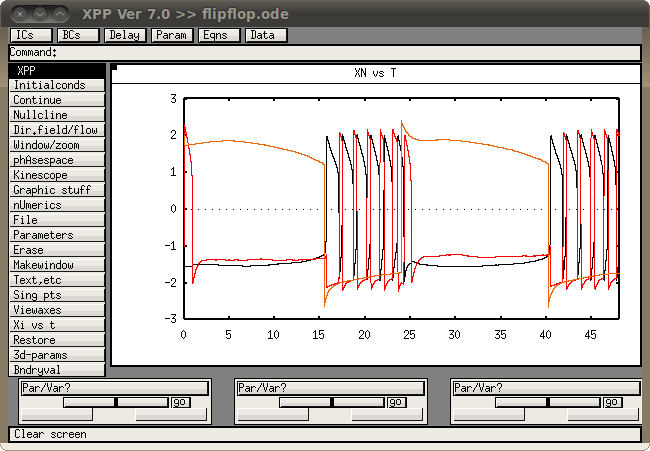

This ODE file reproduces figure 2 from Rempe MJ, Best J, Terman D (2010) A mathematical model of the sleep-wake cycle. J Math Biol 60:615-44 This file was contributed by Michael J Rempe. Notice that as it is written now the simulation contains noise. If you want to reproduce Figure 2 exactly, turn off noise by making gnoise=0 and gnoiserem=0 To start execute a command like (unix/linux) xpp flipflop.ode or start xpp and load the flipflop.ode file (other OS's) and then select Initialconds -> (G)o and then you should see a graph like  To reproduce figure 3, you will need noise and you'll need to modify the code below to start at different circadian phases. You'll also probably need MATLAB or some other computing language to process the output of the XPP runs. The default mode is to plot the wake-active, sleep-active, NREM-active, and REM-active populations as in figure 2 panel b. You can also uncomment the second-to-last line to see the 2-process behavior.